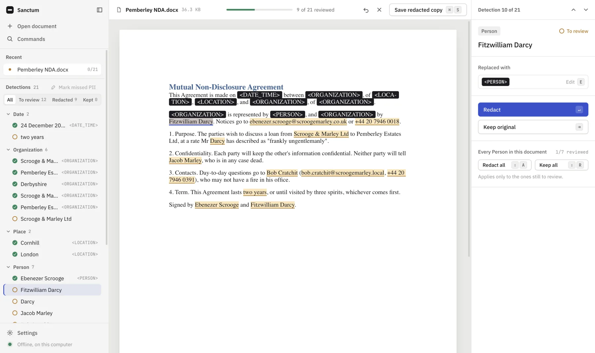
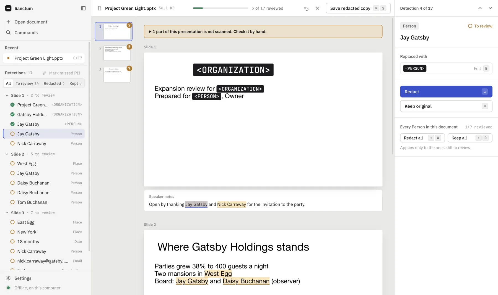
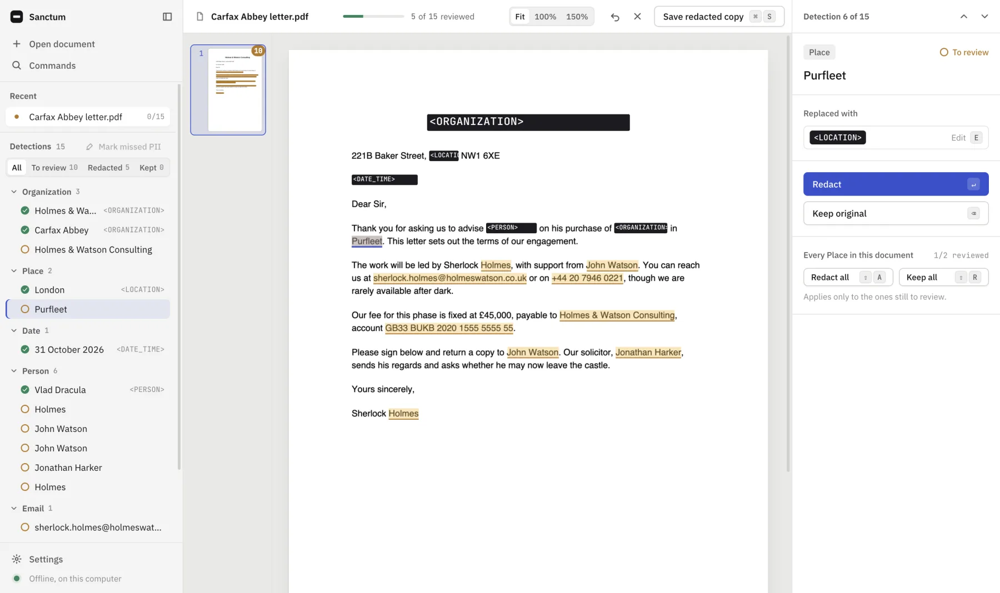

Lawyers
Share a precedent or a draft without sharing the client in it.
Offline redaction · Word · PowerPoint · PDF
Sanctum finds the people, companies, emails and numbers in your files. You decide what goes. Then it re-reads the copy to prove they're gone, all on your own computer.
Free release candidate for Apple Silicon Macs and Linux. Other downloads
Mutual Non-Disclosure Agreement
This Agreement is made on 24 December 2026 between Scrooge & Marley Ltd<ORGANIZATION> and Fitzwilliam Darcy<PERSON> of Pemberley.
Notices go to ebenezer@scroogemarley.local<EMAIL_ADDRESS> or +44 20 7946 0018<PHONE_NUMBER>. Fitzwilliam Darcy<PERSON> finds the interest rate frankly ungentlemanly.
How it works
Three steps. The third is the one that matters.
A contract, a deck or a PDF. Sanctum reads it on your machine. No upload, no account, no waiting on a server.
Every person, company, email and number in one list, in plain language. Redact one, or all People in a keystroke. Names split across formatting or line breaks are caught as one.
Sanctum re-reads the redacted copy before it lets you have it. If anything slipped through, it refuses to save and fixes it in one click. Author, comments and tracked changes are stripped too.
See it
Word pages, PowerPoint slides with their speaker notes, real PDF pages. Same findings list, same shortcuts.



Who it's for
Share a precedent or a draft without sharing the client in it.
Reuse last year's deck without last year's client, or their notes.
Give a contract to an AI assistant without giving it the names.
Download
Free while it's a release candidate. It can still miss a name, so always look over the findings before you send.
The builds are unsigned for now, so your system asks you to confirm the first time you open Sanctum. That is expected.
Drag Sanctum to Applications. macOS will say it is damaged or can't be verified. It isn't, it's unsigned. Run:
xattr -d com.apple.quarantine "/Applications/Sanctum Desktop.app"No terminal? Open it once, then go to System Settings → Privacy & Security and choose Open Anyway. Apple Silicon only; there is no Intel build.
chmod +x Sanctum-Desktop-x86_64.AppImage
./Sanctum-Desktop-x86_64.AppImage
Missing FUSE? Install the .deb instead, or run it
with --appimage-extract.
Not yet. Without code signing, SmartScreen blocks the installer outright, so it waits for a certificate.